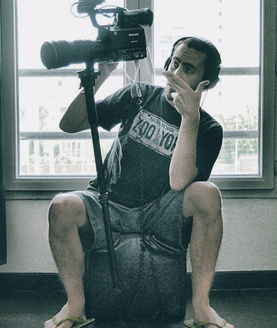
04
Vgtah
Jérôme Thomas, known as the man of the thousand faces that you will never see, because he is always behind the camera, on the phone or behind the computer. With such a name as Vgtah, it would only make sense that he be a frenetic ball of energy much like the Kamehameha of his namesake.
He is most productive managing a whirlwind of projects ranging from music and street art to sports. His many years of juggling allow him to adapt quickly to any situation on a shoot. An experienced editor and a workaholic, he is at home with music videos, corporate and documentary film as much as with post production.
Jérôme Thomas, c’est un peu l’homme aux mille visages qu’on ne voit pourtant jamais : toujours derrière la caméra, au téléphone ou au contrôle de ses machines. Avec un blaze pareil, il ne peut être qu’une boule d’énergie, un « kaméhaméha ».
Il décuple ses forces à coups de projets tournés autour de la musique, du street art ou du sport. Ses années d’expérience lui permettent de s’adapter à toutes les situations de tournage. Monteur expérimenté, c’est un boulimique de travail qui gère aussi bien le clip que le corporate, le documentaire ou la post-production.
- Also known as
- Jérôme Thomas
- Based in
- Paris
- Field
- Music videos, corporate, documentary
- Also
- Editing, post production
Selected workFilms choisis
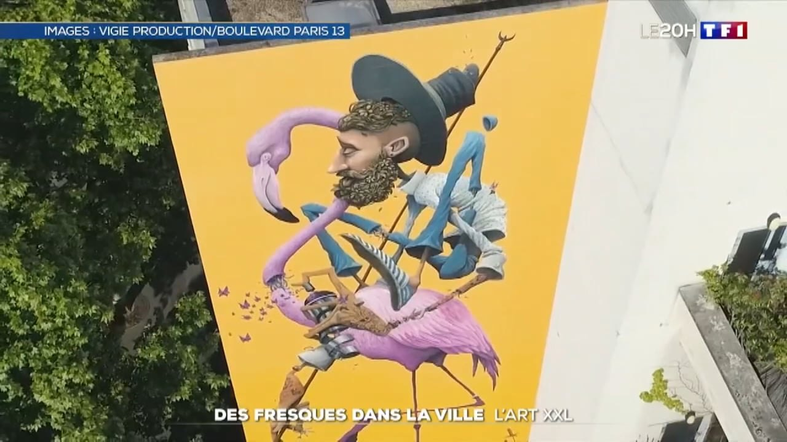
01 TF1 — Jérôme Thomas TF1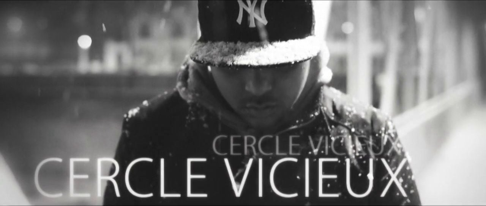
02 Cercle vicieux Neobled & Deadlinz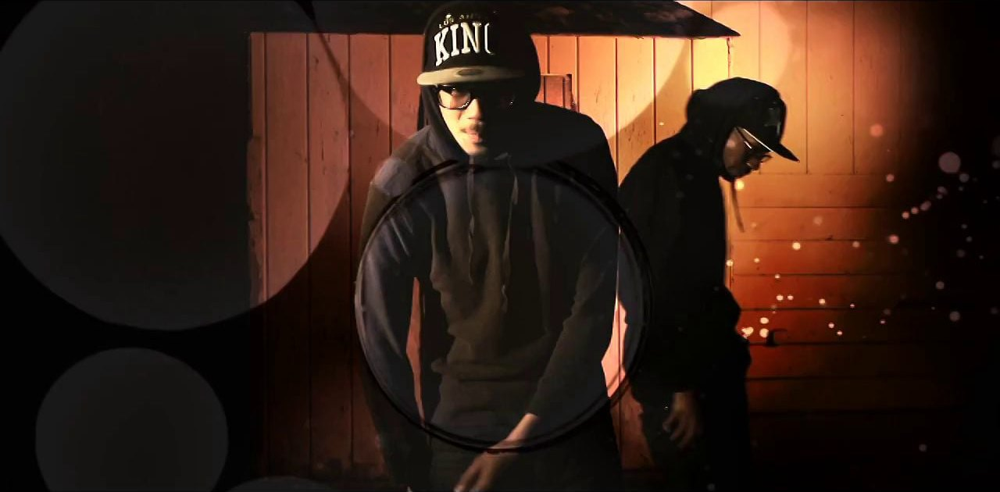
03 Sonik Fiktion Deadlinz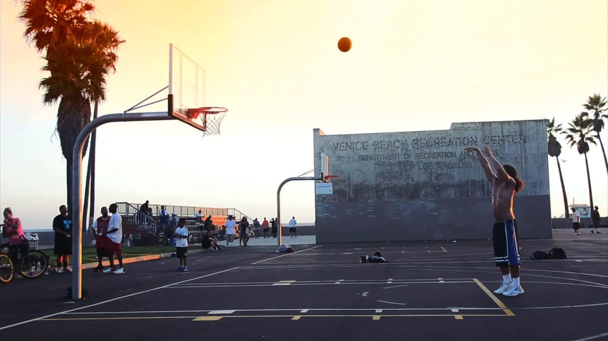
04 Deadlinz Dells Sonik Fiktion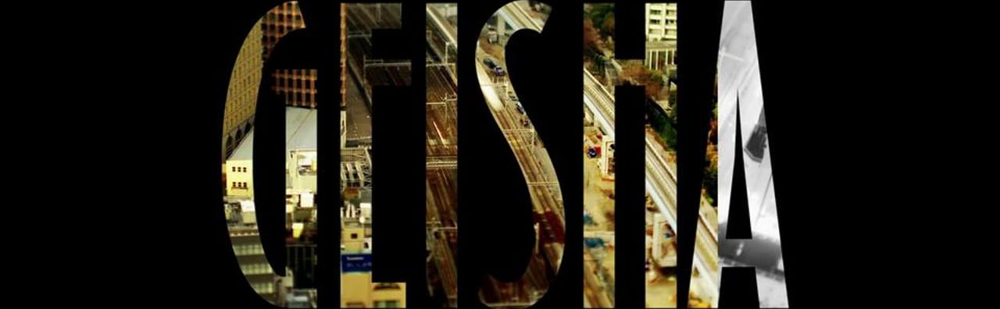
05 Geisha Deadlinz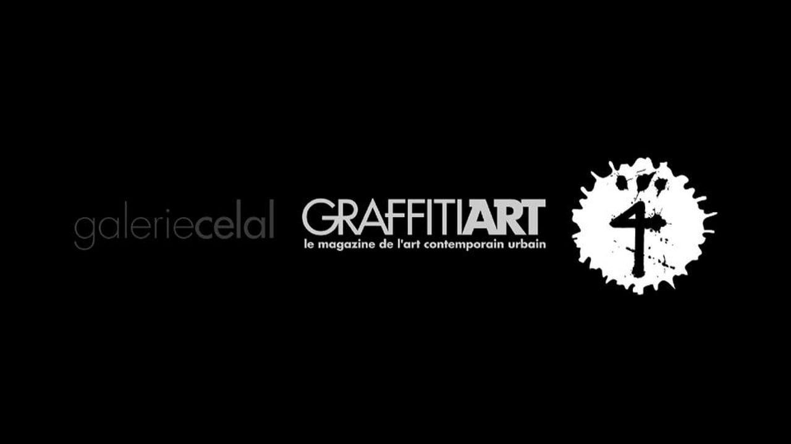
06 Katre — Galerie Celal Galerie Celal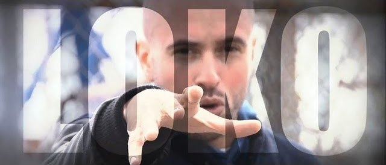
07 L.O.K.O. Loko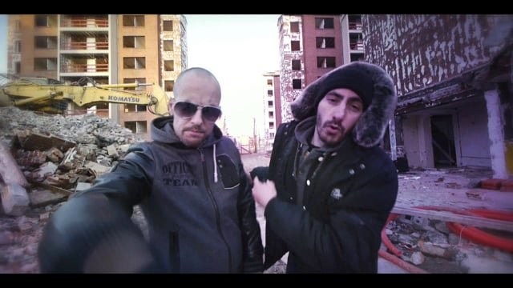
08 La poudre aux yeux Syclone feat. Vgtah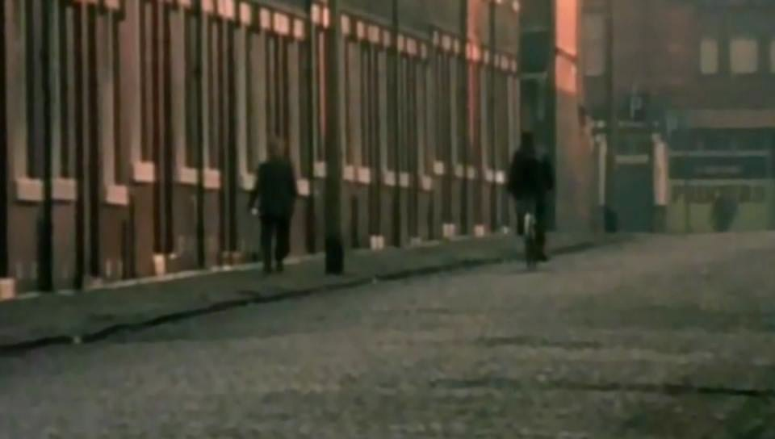
09 L’Histoire de la rave, d’Ibiza à Manchester Viva Productions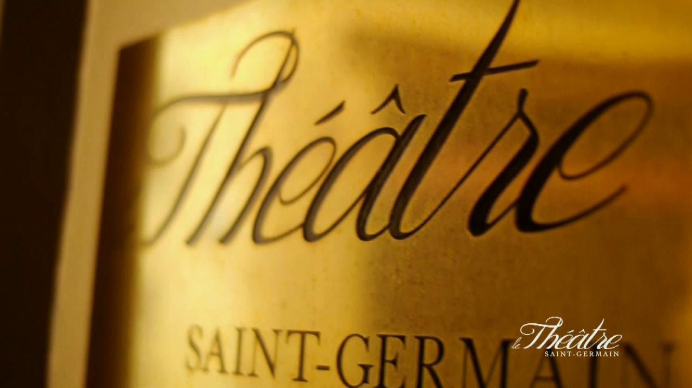
10 Théâtre Saint-Germain Vendôme Événements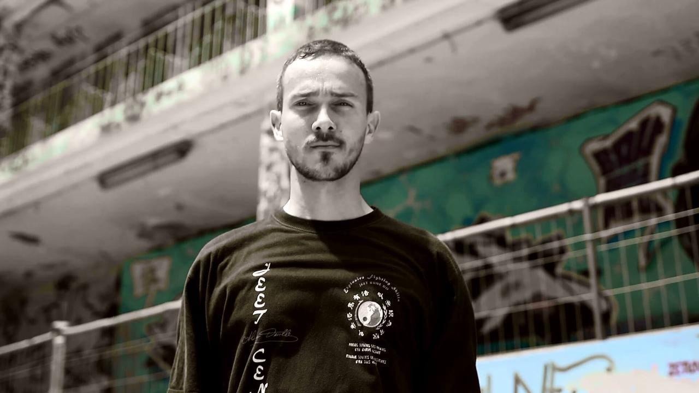
11 Love Deadlinz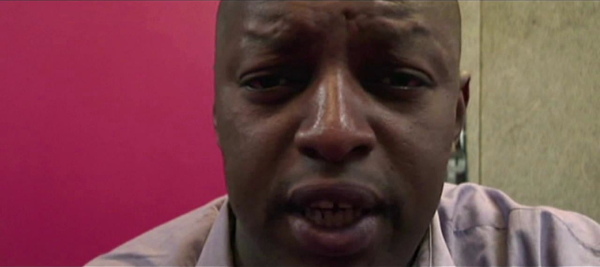
12 Traits portraits Viva Productions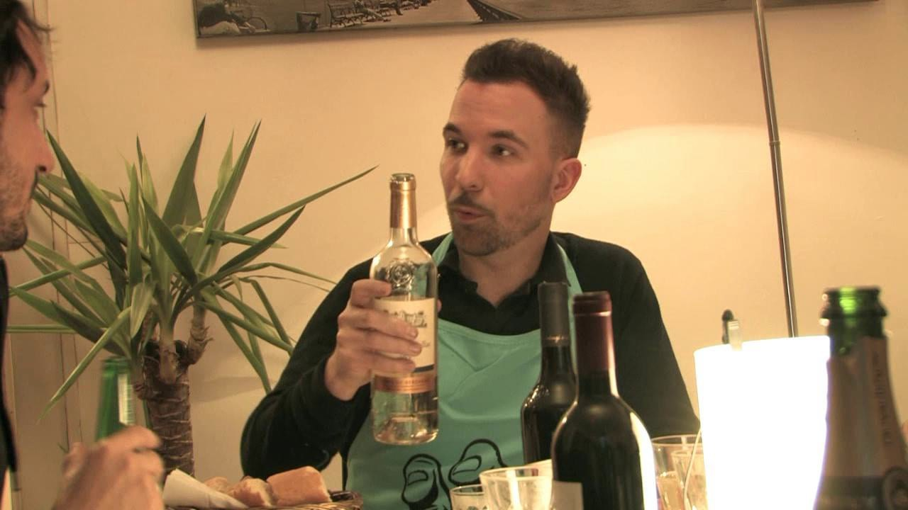
13 J’irai dîner chez Géro Fancie, Horfe, Alexone, Mery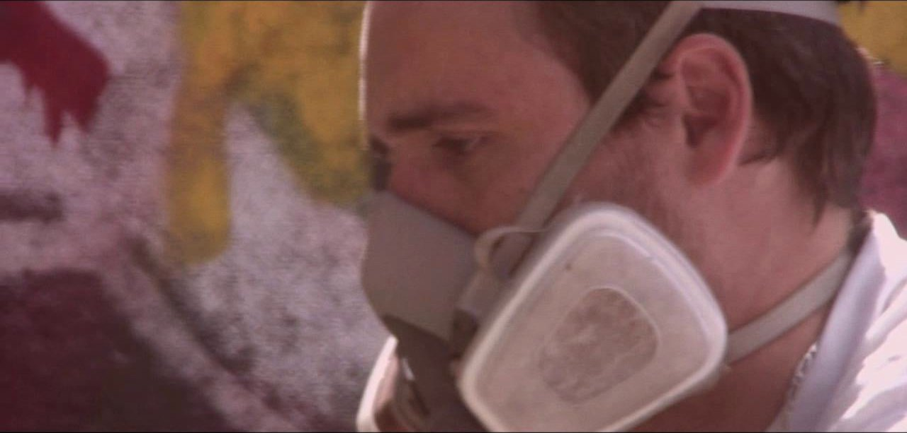
14 Molitor Session Digikid84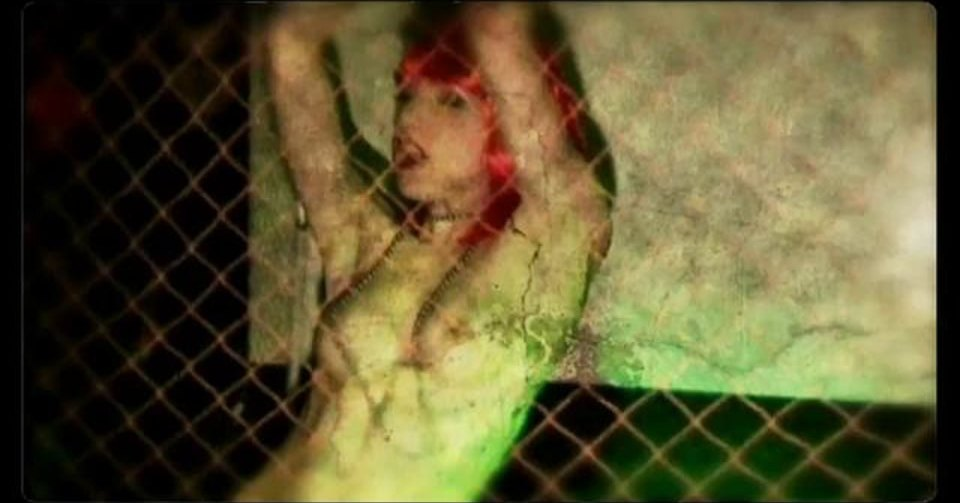
15 Run with the Wolves The Prodigy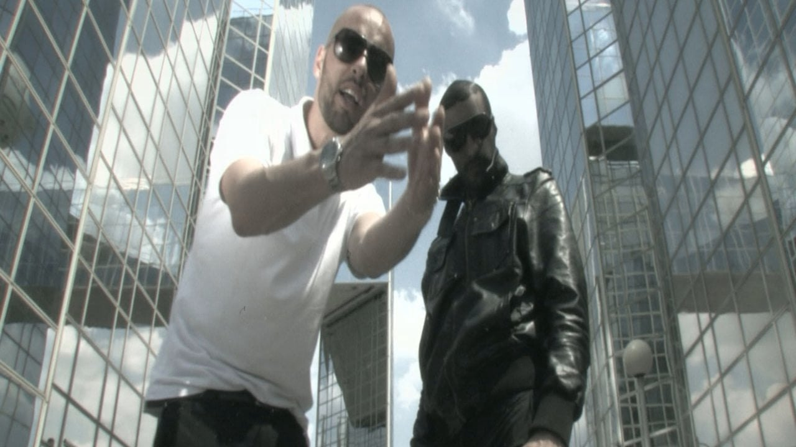
16 Super Hero Syclone